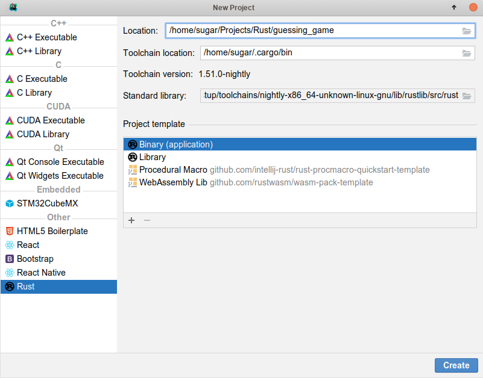
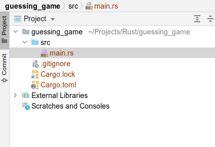
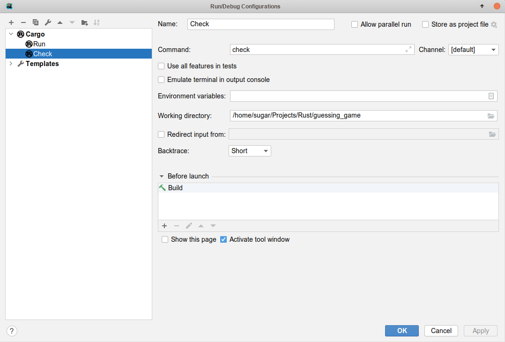
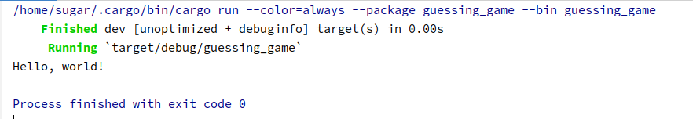
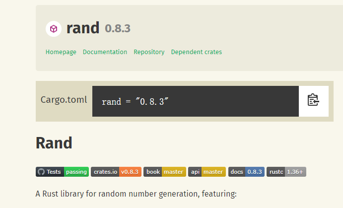
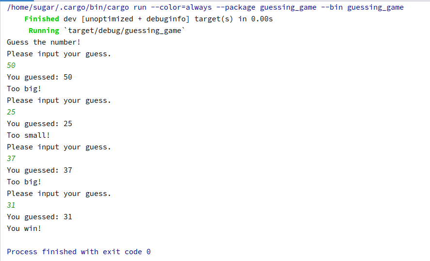

在深入探索Rust语法的细枝末节之前，先通过一个麻雀虽小但五脏俱全的小项目来整体把握Rust，这样可以避免迷失在细节的海洋中。我们可能会通过这个小项目一下子接触到很多新概念，但不必惊慌，我们只需浅尝辄止对这些概念有个印象即可。
《TRPL》（Rustaceans对《The Rust Programming Language》的爱称）中就给出了一个经典的猜谜游戏的例子，我们一起来学习它。
猜谜游戏：程序将会随机生成一个 1 到 100 之间的随机整数。接着它会请玩家猜一个数并输入，然后提示猜测是大了还是小了。如果猜错了，会请玩家继续猜测；如果猜对了，它会打印祝贺信息并退出。
Rust如何管理项目
并不是所有的代码都像hello_world.rs一样，一个文件就可以搞定。一个项目往往具有复杂的代码，我们需要一种机制来管理这种复杂性，将一个项目切分成若干小部分，每个部分再进行切分，层层抽象，直到达到人脑可以处理的规模。每种编程语言都有这样的机制，例如Java的package机制，Rust也不例外。
Rust用了两个概念来管理项目：一个是crate（项目），一个是mod（模块）。模块（mod）是用于在项目（crate）内部进行分层和封装的机制，模块内部可以包含模块。
- crate：可以简单理解为一个项目，crate是Rust中的独立编译单元（compile unit），每个crate对应生成一个库或者可执行文件。作为对比，我们比较熟悉的C语言中，一个单独的.c文件和其所有的include文件组成一个编译单元，每个.c生成一个.o，然后将这些.o链接起来生成可执行文件。
- mod：可以简单理解为命名空间。mod可以嵌套（注意crate之间不能出现循环引用），还可以控制内部元素的可见性。
说到可见性问题，在Rust中，元素默认都是私有的，用pub关键字修饰的元素才是公开的。公开和私有的访问权限规定如下：
- 如果一个元素是私有的，那么只有本模块内的元素以及它的子模块可以访问
- 如果一个元素是公开的，那么可以在本模块外的作用域访问它。
模块是一种抽象的概念，文件是承载这个概念的实体，但是模块和文件并不是简单的一一对应关系。在一个crate内部创建mod的方式有下面三种：
- 在一个rs文件中创建内嵌模块，直接使用
mod关键字即可。 - 独立的一个rs文件就是一个模块，文件名即是模块名。
- 一个文件夹也可以视为一个模块，文件夹内部要有一个
mod.rs文件，这个文件是这个模块的入口。注意必须要在这个mod.rs中声明其子模块，否则子模块无法被当成这个项目的源码进行编译；另外，也需要在该文件夹所在的mod的入口文件中声明该文件夹。
新建项目
cargo不仅是Rust的包管理器，还可以用于创建项目。使用下列命令可以创建一个名为guessing_game的项目：
cargo new guessing_game --bin
注意，后面的--bin意味着我们希望项目生成的是可执行程序，如果希望是library，则可以使用--lib选项。
以上为在命令行中手工创建项目，在Clion中可以点击File->New Project后如下图填写，然后点击Create按钮：

项目结构
我们可以使用tree命令或者直接在Clion中查看当前的文件夹结构，如下图所示：

- src/main.rs：这是cargo自动生成的rs文件。还记得前面讲的crate和mod的概念吗？在这个项目中，
guessing_game是crate，src文件夹是mod，main.rs是srcmod的入口（相应的，lib.rs是library类型crate的入口）。我们可以在srcmod中创建子模块，但注意，这些子模块都要在main.rs中声明，否则无法参与编译。 - .gitignore：这是git忽略文件，不懂其作用的同学可以自行搜索。这里重点要说的是通过
cargo new创建的项目天然就是一个git项目，这也印证了Rust对开源的拥护。 - Cargo.toml：这是项目管理配置文件。TOML是一种非常简洁好用的配置文件格式，TOML是
Tom's Obvious, Minimal Language的首字母缩写，这里的Tom是Github的联合创始人之一，感兴趣的同学可以进一步自行了解TOML配置文件的写法。 - Cargo.lock：该文件包含项目依赖项的确切信息，由Cargo维护，我们无须关心它。
编译执行
在src/main.rs里cargo已经自动生成了输出Hello, world!的代码，我们来运行一下它看能否正常输出。
插一句题外话，在你日后漫长的Rust编码生涯中，你会发现，你将在处理编译错误上耗费大量的时间。还记得吗，Rust 的一大特色是保证内存安全，这保证了Rust代码只要运行起来就几乎不会发生内存错误，这么诱人的效果的背后的代价就是，我们要在编码时付出额外的努力。Rust为了保证内存安全设计了一套复杂的规则，这导致我们的代码一不留神就会编译不过。所以，在你日后经常用的一个操作就是检查能否编译通过，而不是直接编译，因为直接编译还要进行代码优化等操作所以会相对费时。可以使用下列命令检查编译错误：
cargo check
在Clion中需要新加一个Configuration来执行cargo check命令，如下图所示：

确保cargo check通过后，可以执行cargo build来执行编译。编译后会产生一个target文件夹，在target/debug下会有一个和crate同名的可执行文件。但一般为了方便，可以直接执行cargo run，这条命令等价于先编译后执行。下图是执行cargo run后Clion的控制台输出：

猜谜游戏
在完成了项目搭建后，接下来就要开始猜谜游戏的代码编写了，我将它们分成六部分：创建变量、输入、输出、错误处理、随机数生成、完整代码。
创建变量
使用let语句创建变量，需要注意的是，在Rust中，变量默认是不可变的，可以在变量名前使用mut来使得变量可变：
let a = 5; // 不可变
let mut b = 10; // 可变
在上面的let语句中，我们并没有显示声明变量的类型，但这并不代表Rust是动态类型的，Rust仍然是静态类型的，只不过Rust有一个可以通过上下文推断类型的强大编译器。
输出
我们早已在hello_world.rs中见识过了最基本的输出方式：
println!("Hello, world!");
需要注意的是，这里的println!是一个宏，而非一个函数，println后面的感叹号就是宏的标志。Rust中的宏与C/C++中的宏是完全不一样的东西，简单说，可以把它理解为一种安全版的编译期语法扩展。这里之所以使用输出宏而非函数，是因为标准输出宏可以完成编译期格式检查，更加安全。
如果需要输出某个变量的值，可以使用占位符{}，例如：
let x = 0;
let y = 10;
println!("x = {} and y = {}", x, y);
其输出结果为：
x = 0 and y = 10
输入
为了从控制台中获取用户的输入，需要使用标准库std::io。使用use语句将该库引入当前作用域：
use std::io;
我们可以使用io库中的函数stdin：
let mut guess = String::new(); // 创建一个字符串类型的可变变量
io::stdin().read_line(&mut guess).expect("Failed to read line");
stdin函数返回一个std::io::Stdin的实例，这代表终端标准输入句柄的类型。然后调用read_line方法，可以从标准输入中读取一行并存入到guess变量中去。&表示这是一个引用，这是一个复杂的特性，我们现在无须了解它。
读取用户输入后，我们需要判断用户是否正确输入了数字。String类型带有处理字符串处理的一些方法：
let guess: u32 = guess.trim().parse().expect("Please type a number!");
字符串的 parse 方法将字符串解析成数字。因为这个方法可以解析多种数字类型，因此需要告诉 Rust 具体的数字类型，这里通过 let guess: u32 指定。guess 后的冒号:告诉 Rust 我们指定了变量的类型。Rust 有一些内建的数字类型，u32 是一个无符号的 32 位整型。trim方法用于消除回车空格等符号。
错误处理
上一小节代码中还有一个expect没有分析，而这就涉及到Rust中的错误处理机制了。read_line的返回值类型是io::Result，它是Result类型在io模块的特化版本。Result是枚举类型，其成员为Ok和Err，Ok 成员表示操作成功，内部包含成功时产生的值。Err 成员则意味着操作失败，内部包含失败的前因后果。
Result类型的作用是编码错误处理信息。Result 类型像其他类型一样，拥有定义于其上的方法。io::Result的实例拥有expect方法。如果 io::Result 实例的值是 Err，expect 会导致程序崩溃，并打印参数传递给 expect 的信息。如果io::Result实例的值是 Ok，expect 会获取 Ok 中的值并返回。在本例中，这个值是用户输入到标准输入中的字节数。
随机数生成
猜谜游戏需要能够自动生成随机数。Rust标准库中并未包含随机数功能，但我们可以通过引入外部crate来获得随机数功能。还记得Rust的官方开源仓库吗，那里可是有很多宝贝的。打开https://crates.io/，在搜索框中键入rand来搜索具有随机数功能的crate，出来的第一个结果就是我们需要的crate。

现在我们将这个库引入到我们的项目中。打开Cargo.toml，在[dependencies]下添加：
[dependencies]rand = "0.8.3"
[dependencies] 告诉 Cargo 本项目依赖了哪些外部 crate 及其版本。
下面使用rand库来产生随机数。首先，使用use语句引入rand，use rand::Rng;。然后调用下列函数产生一个1和100之间的数：
let number = rand::thread_rng().gen_range(1..=100);
完整代码
猜谜游戏的完整代码如下。
use std::io;
use std::cmp::Ordering;
use rand::Rng;
fn main() {
println!("Guess the number!");
let secret_number = rand::thread_rng().gen_range(1..=100);
loop {
println!("Please input your guess.");
let mut guess = String::new();
io::stdin().read_line(&mut guess)
.expect("Failed to read line");
let guess: u32 = match guess.trim().parse() {
Ok(num) => num,
Err(_) => continue,
};
println!("You guessed: {}", guess);
match guess.cmp(&secret_number) {
Ordering::Less => println!("Too small!"),
Ordering::Greater => println!("Too big!"),
Ordering::Equal => {
println!("You win!");
break;
}
}
}
}
其中，涉及控制流操作的loop、match、continue、break等语法，大家应当能够望文生义。对于这个完整代码，大家能够阅读并大概知道每一行干了啥即可，不必纠结于语法细节。
猜谜游戏运行结果如下：

参考文献
- 《The Rust Programming Language》
- 《Rust编程之道》张汉东
- 《深入浅出Rust》范长春